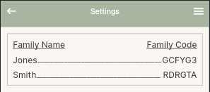

./
A family is a private group. Members share contacts and movie reviews with each other, and nothing is visible outside the family.
When you create a family you become its admin. You provide a name for the family and a unique family code is generated automatically. You will use that code to invite others to join.
Each family has a unique code that new members use to join. As admin you can share the code by SMS or copy it to the clipboard from the family screen.
If you have been given a family code, go to Join Family, enter the code, and you will be added as a member. You must have an ffCircle account before you can join a family. To find the code for a family you already belong to, tap the menu icon in the top bar and select Settings — you will see a list of your families along with their codes.

You can belong to more than one family. Each family is independent — its members, contacts, and movie reviews are kept separate. If you belong to two families, the People screen will show members and contacts from both. When you recommend a movie you will be prompted to choose which of your families the recommendation is shared with.
A family has two kinds of people. A member has an ffCircle account and can log in. A contact is someone added to the family's people list who does not have an account — they are there for reference, such as storing a phone number or birthday. A contact might also be someone in the family who simply hasn't joined the app yet.
If a contact later creates an ffCircle account and joins the family using the family code, they will be matched to their existing contact record by email address. Any information previously entered for them — birthday, phone number, notes, and so on — will carry over automatically.
The admin can invite members, promote or demote other members to admin, and manage the family. A family can have more than one admin.